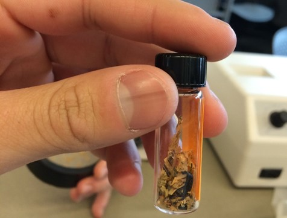

What are
Microplastics?
.
-
What are Microplastics?
Microplastics are tiny plastic particles that are 5mm or less in size. That's about the size of a pencil eraser or smaller. Due to their small size, they're hard to see and hard to detect. Microplastics come from several different sources and can be a major pollutant in fresh and saltwater environments.
-
Where do Microplastics come from?
Microplastics are either manufactured at small sizes for commerical or consumer use- such as microbeads in soap or toothpaste- or they can be formed by the breakdown of larger pieces of plastic over time. These plastic particles end up in water bodies through runoff, wastewater effluent, littering, and other processes.
-

Why do they matter?
Many of the things we use everyday are made out of plastic and plastic is a material that is designed to be durable and avoid breaking down. Millions of tons of plastic are produced each year for consumer and industrial use. One study estimates that 10% of all manufactured plastic evetually ends up in marine environments through various channels. Due to its durability, when plastic ends up in our oceans and lakes, it can persist there for decades, if not centuries.
Plastics can cause harm to the living organisms living in our oceans. Microplastics have been found in the stomaches and tissues of fish, mollusks, invertebrates and other sea creatures. These plastic particles can cause blockages in the digestive system, or change typical feeding behaviors when ingested. Plastics can also leach harmful chemicals as they breakdown. -
Why should we study microplastics?
While we have studied the negative effects of large plastic pieces in our oceans for several decades, we have only really just started to measure and study the concentrations and effects of microplastics in these same areas. We need more data to assess how these particles are affecting our ecosystems and food chain.
UW Tacoma has a robust microplastic sampling program to study the concentrations of these particles in the Salish Sea area. This research is made possible with the help of interested citizen science groups, students, and other community partners.
How do we measure
Microplastics?

Sample planning and training
UWT relies on the contributions of both research scientists as well as students and trained citizens. All participants are trained in the proper ways to record, collect and handle samples. Together,scientists and partners have collected and analyzed hundreds of samples
Preparing for Sampling
To collect water samples, research participants use a special net designed to capture particles the size of microplastics. This net is towed behind a boat, collecting any particles from the top of the water column.
Sampling
The net is towed for 5-15 minutes, depending on boat speed. All material larger than the target miscroplastic particle size are collected in the net as water passes through.
Recording
While the sample is being collected, participants record some key data about the sample, including the sample number, geographic location it was taken, the speed of the boat and how much water passed through the net.
Sieving
Once the sample is collected, the net is pulled back onto the boat. Its contents are emptied into a sieve and participants sort the contents of the sample by size. The collected matter that is too large is discarded.
Ready for processing
The sample at this point is full of tiny organic and inorganic matter, some of which might be microplastics. The sample is taken to a laboratory at UW Tacoma for further processing.
Processing the Sample
In the lab researchers seperate the sample contents based on density and then process the sample to remove organic material. Researchers then look at the sample under a microscope and individually sort and seperate any plastic pieces. The plastic is weighed to determine the total mass of the microplastic that was collected.
Results
Based on the total mass of the plastic in the sample, and the volume of water that passed through the net during sampling, scientists can determine the concentration of microplastics. They measure this in mg/L, or ppm (parts per million). This concentration represents the average concentration of microplastics found in the area sampled.
Continuous Monitoring
We still have a lot to learn about how much microplastics are in our water and what effects it has on our ecosystems. Its necessary to collect and analyze samples often to measure concentrations, track trends and gain more knowledge about these tiny particles in our waters.
Want to know more about the research?
Watch this short video to learn more about the University of Washington's
microplastic sampling program in partnership with the Center for Urban Water.